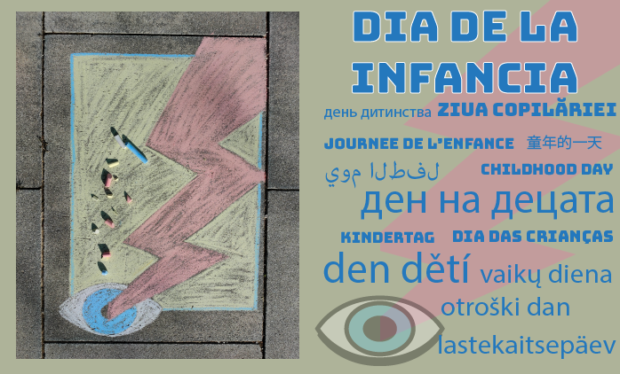
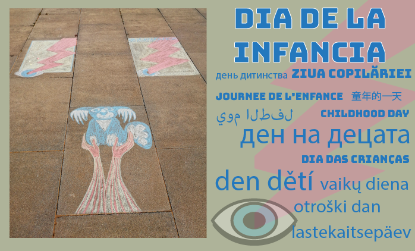

Información General
Existen 50 países en el mundo que celebran la infancia el día 1 Junio, fecha designada como Día Internacional del Niño en la Conferencia Mundial de Ginebra del año 1925. De aquellos, 13 están en el continente europeo, 11 en la Unión Europea (Alemania, Bulgaria, Chequia, Eslovaquia, Estonia, Eslovenia, Letonia, Lituania, Polonia, Portugal, Rumania) y 2 más, en trámites para la adhesión (Ucrania y Moldavia).

Conscientes de que España celebra el Día del Niño el 23 de Abril, y sin querer crear confusión, hemos creado un proyecto para celebrar el Día Internacional de la Infancia. Dicha propuesta se ha concebido a nivel estatal entre varias asociaciones de rumanos emigrados en España, obtuvo el respaldo del Instituto Cultural Rumano de Madrid, la participación del Centro Nacional de Cinematografía de Rumania, y se llevará a cabo con la colaboración de las comunidades relevantes y las instituciones implicadas.
Porque la animación es un arte colaborativo e inclusivo, nuestro proyecto gira en torno al dibujo, la narrativa, la música y la animación, para darles pautas a nuestros niños sobre la necesidad de tener un equilibrio entre la competitividad y el trabajo en equipo, e incentivarlos a descubrir a sus compañeros dentro de un entorno de intercambio cultural, en un día donde ellos son los protagonistas.

Precedentes
La pandemia de COVID ha afectado nuestra manera de pensar de un día para otro.
De repente, personas que no se dijeron más que un mero “hola” en el ascensor en años, se estaban mirando y hablando durante los aplausos de las 8, animándose, dándose apoyo y compartiendo recursos, sin importar las diferencias étnicas.
Idea
Creemos que aquel compartir fue un gran momento para los vecinos de nuestra ciudad, que descubrieron en el confinamiento el lado que nos une: el de seres humanos, sin más.
Creemos que podríamos hacer lo mismo a través de un proyecto cultural, sabiendo que coincidimos en un propósito que nos une: todos queremos que nuestros niños crezcan en un entorno inclusivo, en el cual la diversidad de orígenes sea celebrada, el bilingüismo valorado, y las culturas apreciadas.
Protagonistas
El Día de la Infancia invita a todos los pequeños vecinos de la comunidad a que se unan en un acto de celebración de lo que todos valoramos: el derecho a una infancia digna y feliz.